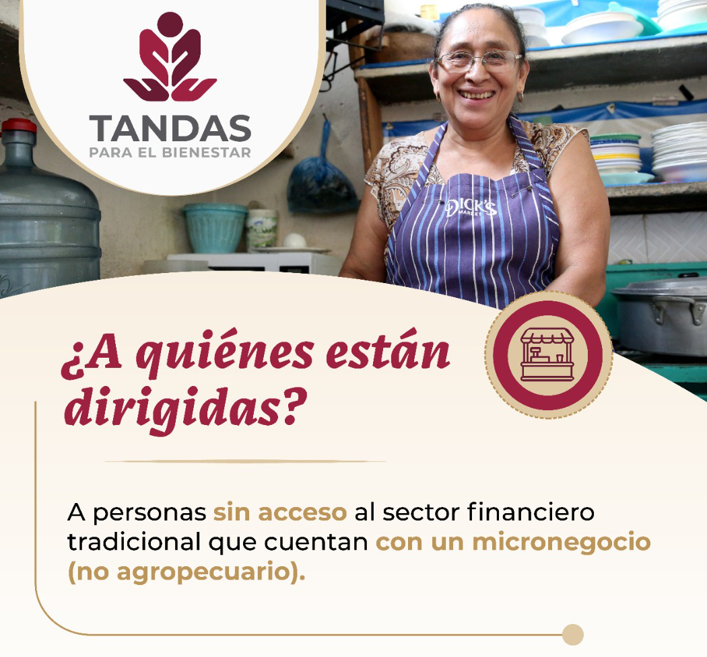
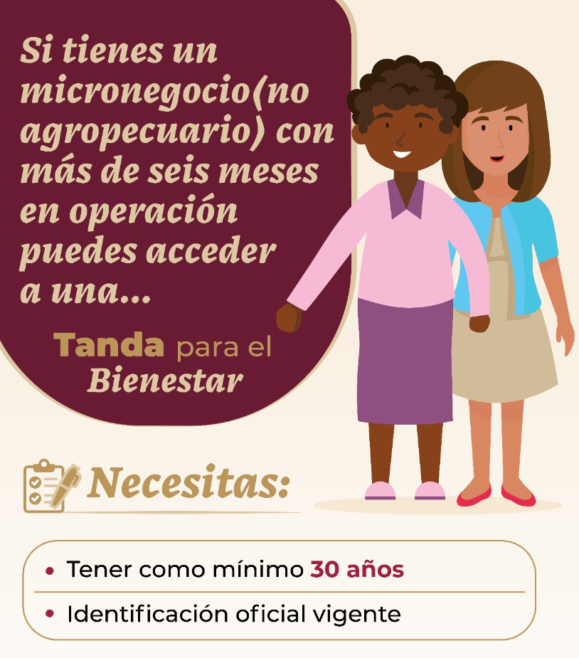
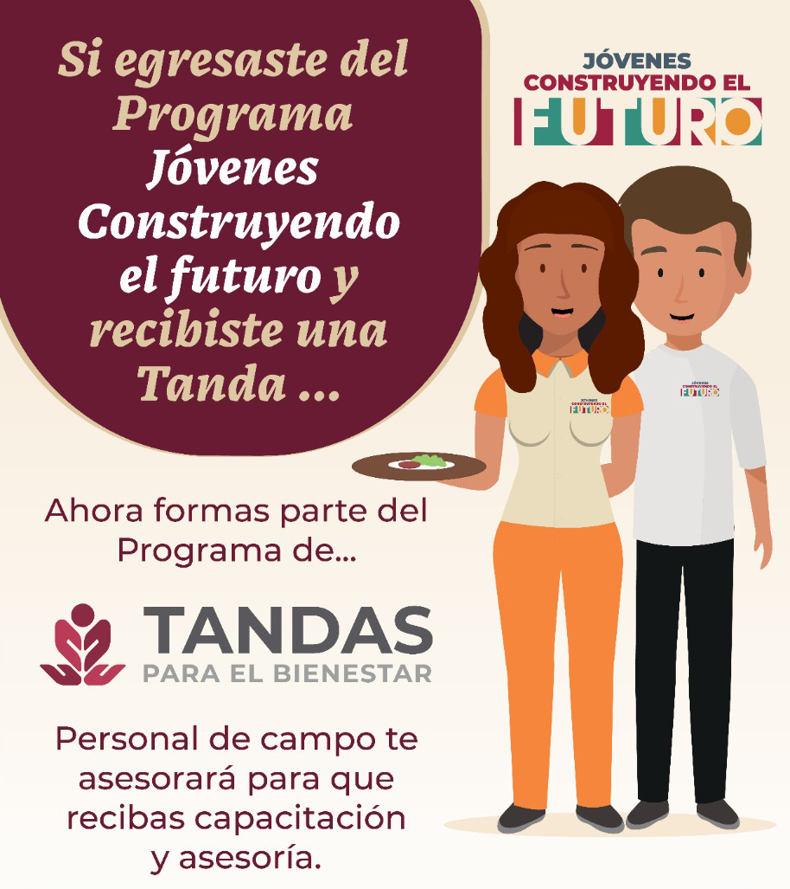
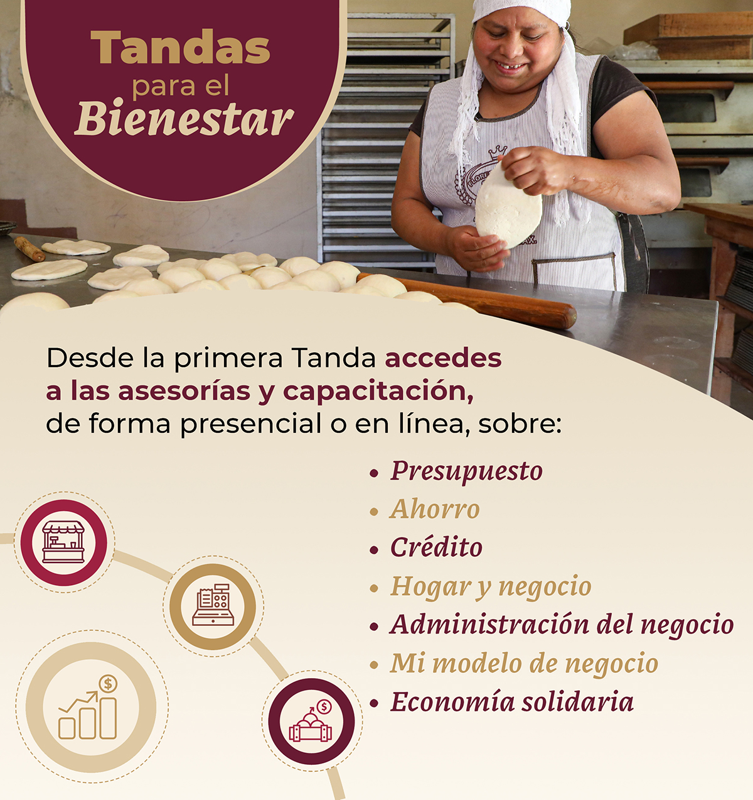
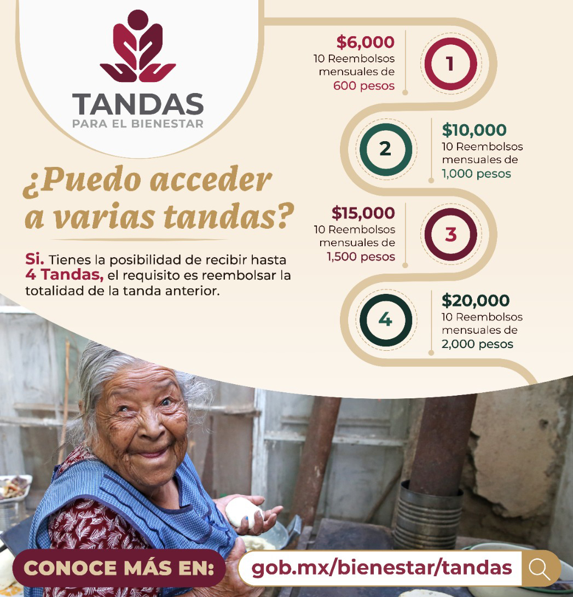
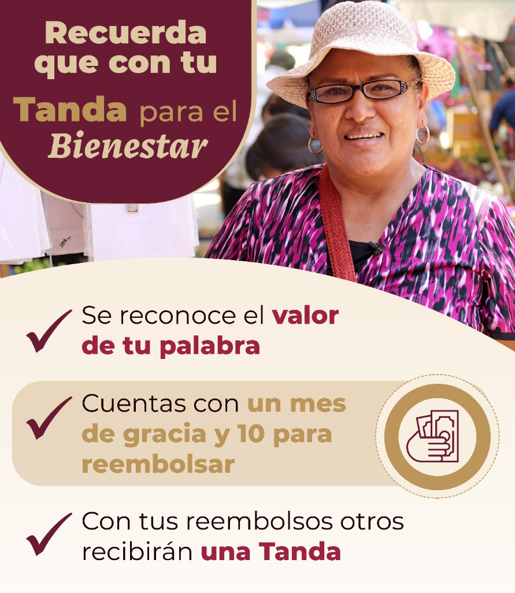
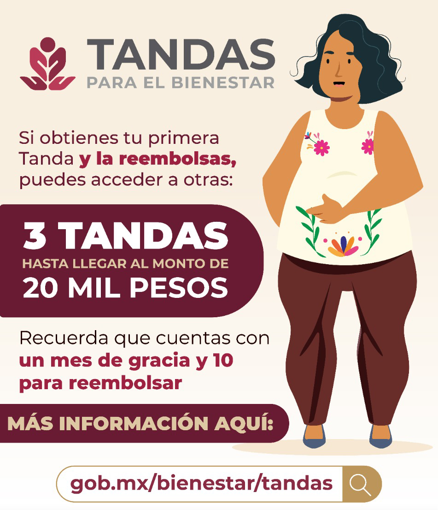
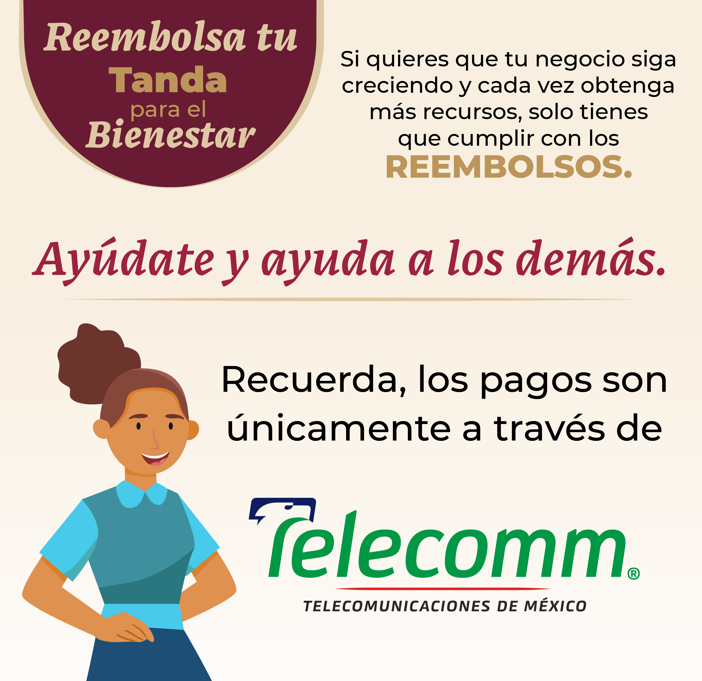

Programa de tandas para el bienestar.
El objetivo del programa es contribuir al desarrollo de las capacidades financieras y empresariales básicas de las personas beneficiarias.
Fechas relevantes.
El 28 de febrero de 2019, el 27 de febrero de 2020 y el 22 de diciembre de 2020, se publicaron en el Diario Oficial de la Federación (DOF) los Lineamientos para el Programa Microcréditos para el Bienestar para los años 2019, 2020 y 2021, respectivamente, como uno de los 30 proyectos y programas prioritarios del Gobierno de México.
Los días 15 de abril y 11 de junio de 2020 se publicaron en el DOF las modificaciones para regular la operación del programa.
El 12 de enero de 2021 fue celebrado el Acuerdo de Traspaso de Recursos Financieros y Humanos del programa, de la Secretaría de Economía a la Secretaría de Bienestar.
¿Qué son las tandas para el bienestar?
Es uno de los Programas Prioritarios del Gobierno de México cuyo objetivo es otorgar Apoyos mediante Financiamiento, Asesoría y Capacitación.
El Programa de Microcréditos para el Bienestar, mejor conocido como Tandas para el Bienestar, tiene la finalidad de impulsar el desarrollo económico de las familias y comunidades a través de la consolidación de los negocios y se mejoren las condiciones de vida de las personas desde una perspectiva de género e inclusión social.
El Programa inició operaciones en 2019, en el periodo 2019 se otorgaron 351,000 Tandas, durante 2020, 495,000 y en el año 2021 se otorgaron 327,000.
El programa contempla dos modalidades: “Consolidación” y “Mes 13”.
Población objetivo
El Programa de Microcréditos para el Bienestar o también conocido como “Tandas para el Bienestar”, está dirigido a mujeres y hombres con micronegocios que requieren financiamiento.
Modalidad consolidación:Atiende a personas beneficiarias que habitan municipios y localidades con media, alta y muy alta marginación; con presencia de población indígena o afromexicana y/o altos índices de violencia, con 30 años de edad como mínimo.
Modalidad mes 13 JCF:Atiende a personas egresadas del programa Jóvenes Construyendo el Futuro que han concluido el curso de capacitación y manifestaron su interés en iniciar un micronegocio.
Características de los microcréditos:No se pide comprobar ingresos, tampoco garantías, avales ni historial crediticio.
El microcrédito no cobra intereses, se entrega en el corto plazo y se reembolsa con los ingresos de las personas beneficiarias.
Ofrece un mes de gracia antes de iniciar el reembolso completo en 10 mensualidades.
Se puede acceder a cuatro microcréditos consecutivos, siempre y cuando sean reembolsados.
Modalidades de los microcréditos
1. Consolidación:Para quienes tengan un micronegocio no agropecuario.
Requisitos
- Tener como mínimo 30 años de edad
- Que el negocio no desarrolle ninguna actividad agropecuaria y tenga más de seis meses en operación
- Identificación oficial vigente
- Proporcionar la CURP
2. Mes 13 Jóvenes construyendo el futuro:Para jóvenes que, luego de terminar su capacitación de un año, decidan emprender un negocio.
Requisitos
- Ser egresado del Programa Jóvenes Construyendo el Futuro
- Estar interesado en crear tu propio negocio no agropecuario
- Tomar y finalizar un curso de capacitación para tu micronegocio
Asesorías
Tandas para Bienestar realiza un acompañamiento a los microempresarios con asesorías y capacitación. Para ello, se cuenta con cursos en línea.
Montos
Requisitos
- Primera tanda: $6,000 (seis mil pesos)
- Segunda tanda: $10,000 (diez mil pesos)
- Tercera tanda: $15,000 (quince mil pesos)
- Cuarta tanda: $20,000 (veinte mil pesos)
Rembolsos
El programa se nutre de recursos públicos autorizados en el Presupuesto de Egresos de la Federación 2022 y no contempla el cobro de intereses para ninguno de los beneficiarios.
Si quieres que tu negocio siga creciendo y cada vez obtenga más recursos públicos, solo tienes que cumplir con los reembolsos.

Los pagos se realizan únicamente en las sucursales de Telecomm. Checa la sucursal más cercana a ti
